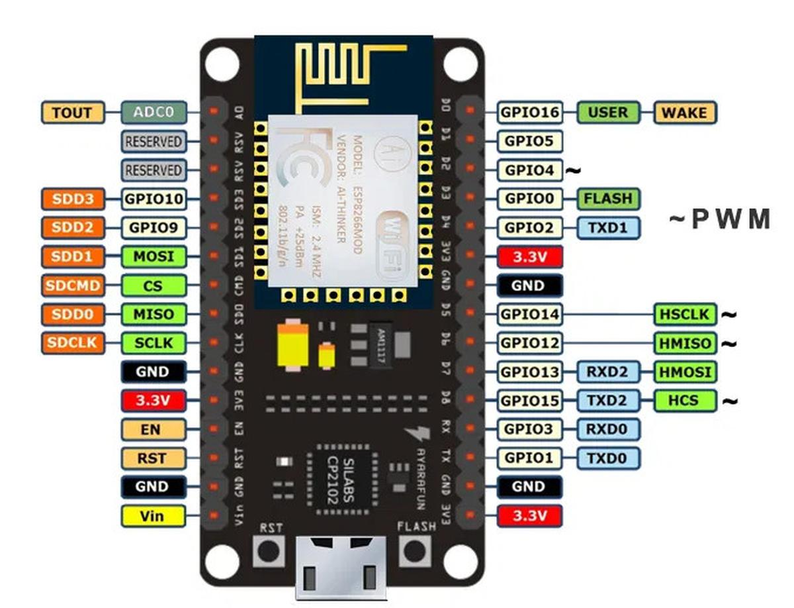
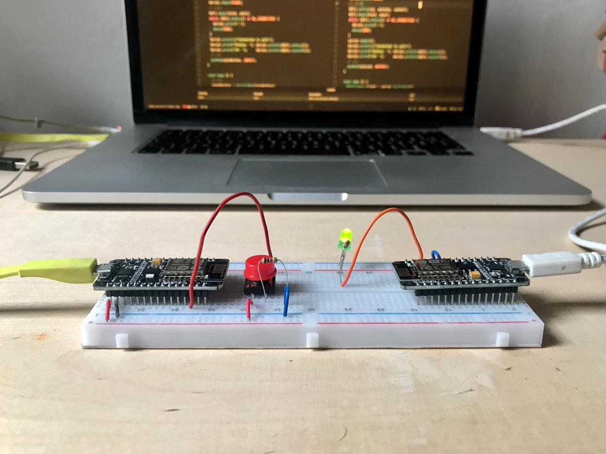
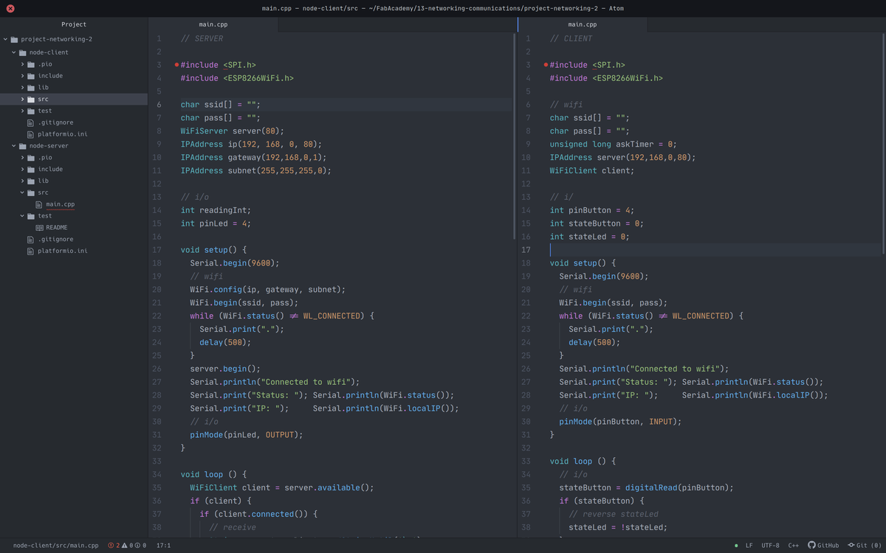
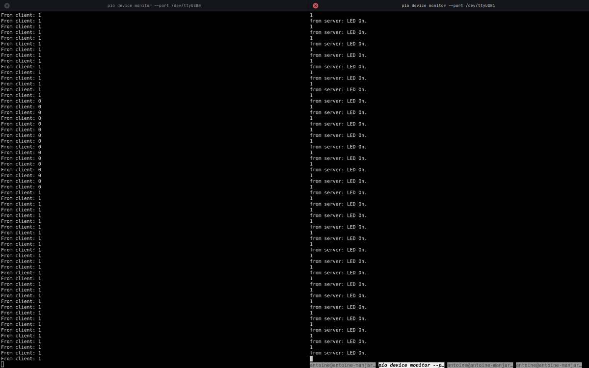

Networking and communications
For this week's assignment, I will connect two ESP8266 / NodeMCU together on the WiFi network and exchange data between them.
Understanding the basics of networking and how communication between devices works will be highly beneficial for my final project.
I decided to keep it simple to have a working example easily reproducible, without project-specific elements that make the code more complex. Therefore, the interaction must be basic: press a button on one side and light a led on the other side.
Hardware
I'm using two NodeMCU equipped with ESP8266 chips, mounted on a breadboard to facilitate the prototyping phase. The first NodeMCU, the server, has a LED connected to its pin 4 (d2). The second NodeMCU, the client, has a push-button connected to its pin 4 (d2). The WiFi network is prodived through my home router.
 (image source)

Software
Project structure
As I use PlatformIO to program my boards, the configuration of a project is fairly straightforward. I need one folder per board and an additional folder that wraps the two subfolders.
networking-project/ - node-client/ - node-server/
Initiate each node project pio project init and configure their plaformio.ini file with these values (which indicate which board it is and which framework I'm using):
[env:nodemcuv2] platform = espressif8266 board = nodemcuv2 framework = arduino
I connect the two NodeMCUs simultaneously on my computer, to be sure that the right program is uploaded to the right board, I must configure the upload port.
To find out which port is used and by what (device list): $ pio device list (source)
I can now add upload_port = /dev/ttyUSB0 to the server's platformio.ini file and upload_port = /dev/ttyUSB1 to the client. Depending on how I plugged them into my computer.
Code
The server will wait for a message from the client indicating whether to turn on its LED or not. The client will connect to the server network and send it its data, depending on the state of a simple push button.

Once the connection between the two devices is established, messages can be sent from one to the other and vice versa. But the hierarchy between them must remain. The server continues to be the server, as does the client. This is shamelessly called the master/slave relationship.
In the code below, **** must be replaced by the name and password of the WiFi network.
char ssid[] = "****"; char pass[] = "****";
Server
#include <ESP8266WiFi.h>
char ssid[] = "****";
char pass[] = "****";
WiFiServer server(80);
IPAddress ip(192, 168, 0, 80);
IPAddress gateway(192,168,0,1);
IPAddress subnet(255,255,255,0);
// i/o
int readingInt;
int pinLed = 4;
void setup() {
Serial.begin(9600);
// wifi
WiFi.config(ip, gateway, subnet);
WiFi.begin(ssid, pass);
while (WiFi.status() != WL_CONNECTED) {
Serial.print(".");
delay(500);
}
server.begin();
Serial.println("Connected to wifi");
Serial.print("Status: "); Serial.println(WiFi.status());
Serial.print("IP: "); Serial.println(WiFi.localIP());
// i/o
pinMode(pinLed, OUTPUT);
}
void loop () {
WiFiClient client = server.available();
if (client) {
if (client.connected()) {
// receive
String request = client.readStringUntil('\r');
Serial.print("From client: ");
Serial.println(request);
readingInt = request.toInt();
client.flush();
// send
if (readingInt) {
digitalWrite(pinLed, HIGH);
client.println("LED On.\r");
} else {
digitalWrite(pinLed, LOW);
client.println("LED Off.\r");
}
}
client.stop();
}
}
Client
#include <ESP8266WiFi.h>
// wifi
char ssid[] = "****";
char pass[] = "****";
unsigned long askTimer = 0;
IPAddress server(192,168,0,80);
WiFiClient client;
// i/o
int pinButton = 4;
int stateButton = 0;
int stateLed = 0;
void setup() {
Serial.begin(9600);
// wifi
WiFi.begin(ssid, pass);
while (WiFi.status() != WL_CONNECTED) {
Serial.print(".");
delay(500);
}
Serial.println("Connected to wifi");
Serial.print("Status: "); Serial.println(WiFi.status());
Serial.print("IP: "); Serial.println(WiFi.localIP());
// i/o
pinMode(pinButton, INPUT);
}
void loop () {
// i/o
stateButton = digitalRead(pinButton);
if (stateButton) {
// reverse stateLed
stateLed = !stateLed;
}
// server
client.connect(server, 80);
// send
client.println(stateLed);
// receive
String answer = client.readStringUntil('\r');
Serial.println("from server: " + answer);
client.flush();
delay(500);
}
Results
The connection is established. One chip talks to another on the WiFi network.
And even if it doesn't seem impressive when exposed like that, this little 0 or 1 transported on a wireless network and telling the LED what to do opens up a lot of possibilities in my projects to come.

(The NodeMCU don't fit well on the breadboard, I had to hold them in place during the experiment to be sure that the connections were good.)